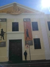

Which City

TOKYO:
I've chosen tokyo because i would like to visit the imperial palace one day.I also wanna visit the restuarants there because i hear that they are good.
A Foreign Language
I've chosen japanese because i love the way people pronounce the japanese words
| English | Japanese |
|---|---|
| Hey | Chotto |
| bye | Bai |
| Love | Ai |
| You | Kimi wa |
| Thank You | Arigatōgozaimashita |
Historic Places In Cape Town:
Castle of Good-Hope

The first stone was laid on 2 January 1666 and it was completed by April 1679. Opened in1679, the Castle is the oldest surviving building in South Africa. The Castle of Good Hope was referred to as “Kui keip” by the Khoi and sometimes “Citadel” by Dutch settlers.
Iziko Museum
The Iziko Museum was founded by Lord Charles Somerset in 1825 as a general museum comprising natural history. The Museum houses more than one and a half million specimens of scientific importance. For nearly 200 years scientists at the Museum have been adding to these collections and studying them.
district-six

Small but intense museum documenting the displacement and destruction policies not all that long ago. The materials used to build the Castle were local and included rock cut from the granite outcrop on Signal Hill. It provides great intro in the dark past of the city.